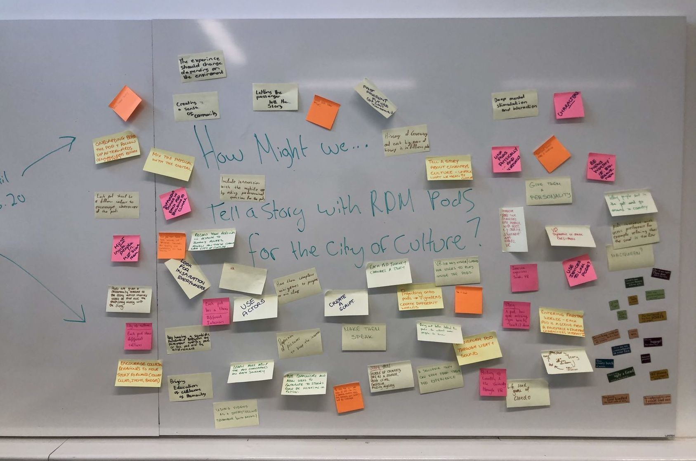
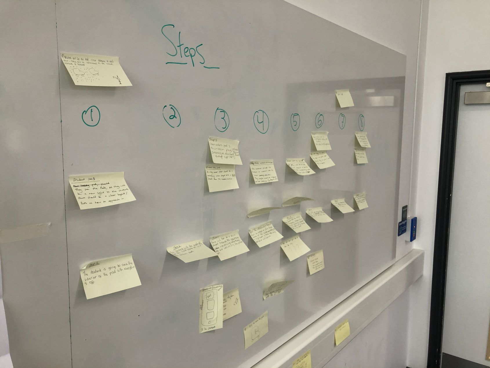

This week we have had a group meeting for the driverless cars digital marketing campaign project. This project has been challenging so far, because we are not only considering the digital marketing content, but also the driverless car experience that the audience will have on the open day. Therefore we have had to consider the narrative, and how we are going to gamify this experience to make it more fun, as well as things like marketing materials such as branding and stands for the area that the driverless cars will be located.
In the meeting we have also been told that there is a possibility that the open day will be cancelled due to the Coronavirus outbreak, and so a lot of things are up in the air, however we are trying to work as if the open day is still on as expected.

The meeting was useful as it helped us to come up with a narrative, we decided to draw on Coventry's history, as this will be interesting for potential students who may move to this city. We came up with the idea of having a Gargoyle who is attempting to steal graduation diplomas, and so the aim of the game, whilst in these driverless cars, is to solve riddles to stop him.
My role in this project is to create the app wireframes and prototype, as well as creating some of the branding, such as a logo and a poster/marketing stand to draw the visitors in.